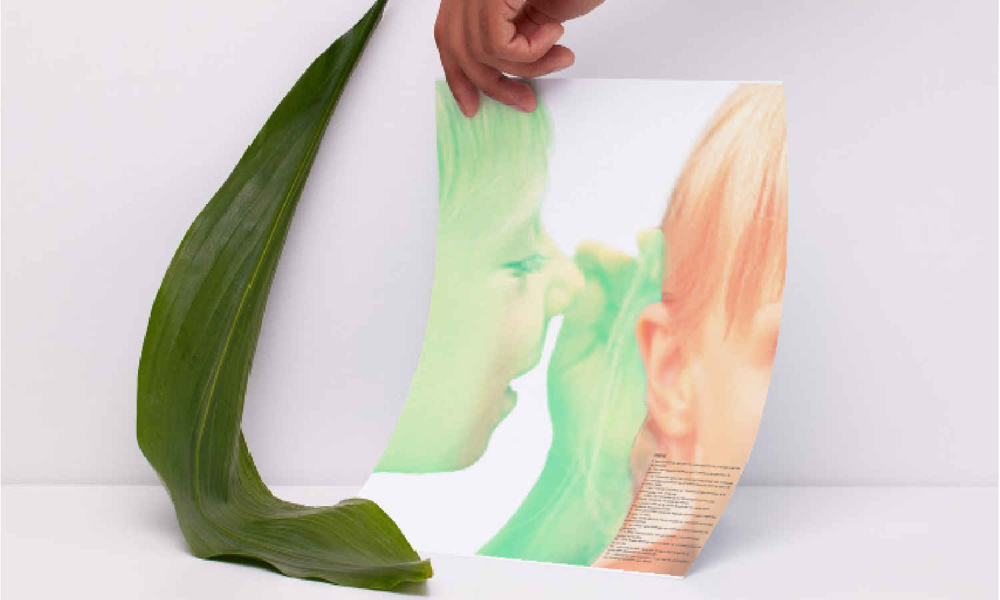
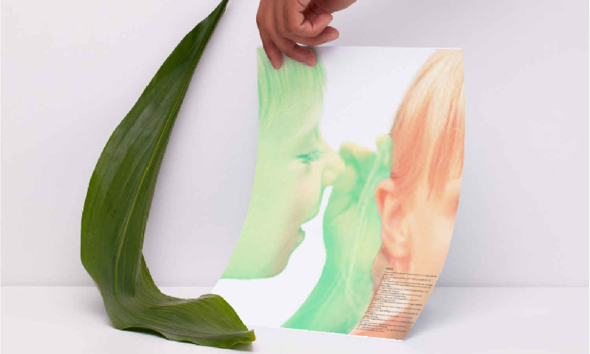

Légendes Urbaines
DESIGN MESSAGE/ mise en page - indesign - poster
[2024]
Ce projet consiste à la création d’un poster dépliable de A3 à A6. Il devait être dôté d’une image au recto et au verso, divers récits de légendes urbaines. Mais que sont les légendes urbaines? La manière de s’approprier le dépliant est libre. En poster ou en format de poche, chaque principe est pensé afin d’être pris en main selon le sens que l’on s’en fait. Entre mensonge et vérité, les degrés d’iconicités se confrontent afin de refléter au mieux les notions définie sur chacuns des posters. Ces paroles détournées, confrontées à la réalité et transformées renvoient à une idée d’un cheminement allant de bouches à oreilles pouvant être altéré. Ce «bouche à oreille» peut être mis en parallèle aux «secrets» que se transmettent les enfants lorsqu’ils ont entendus parler d’une de ces légendes. Les paroles sont alors dénaturées. Une dualité colorée ressort pour faire part d’un émetteur de légende et d’un récepteur qui s’illustre par un dialogue en image. Le principe de pliage est alors défini en fonction des paragraphes pour éviter d’altérer la lecture.


Ces écris ne sont que des légendes, et pourtant...
 
